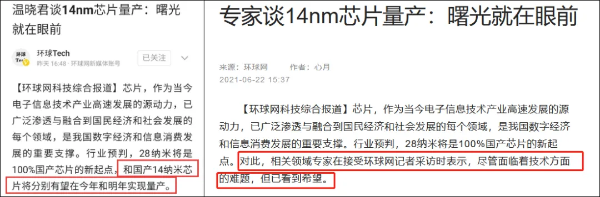
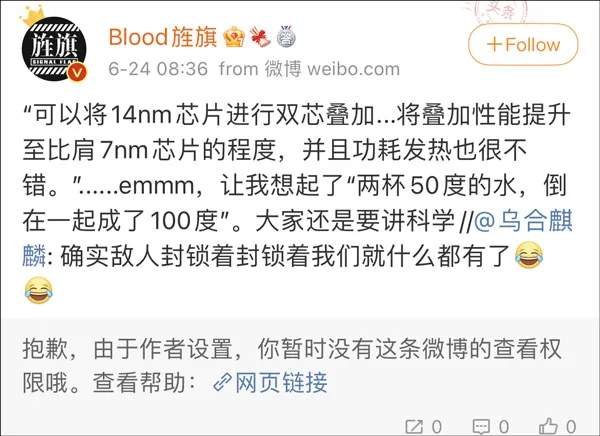
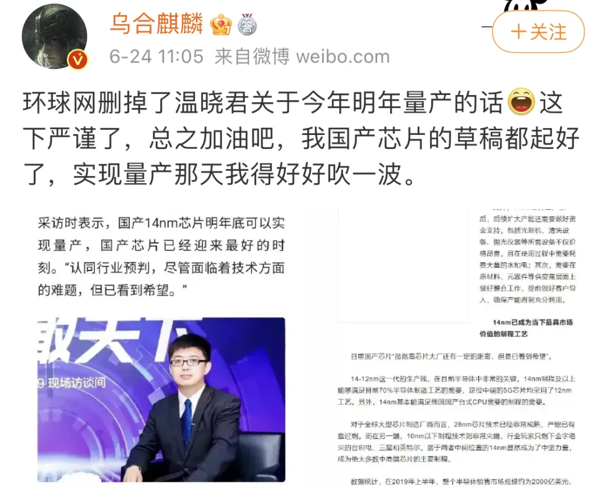
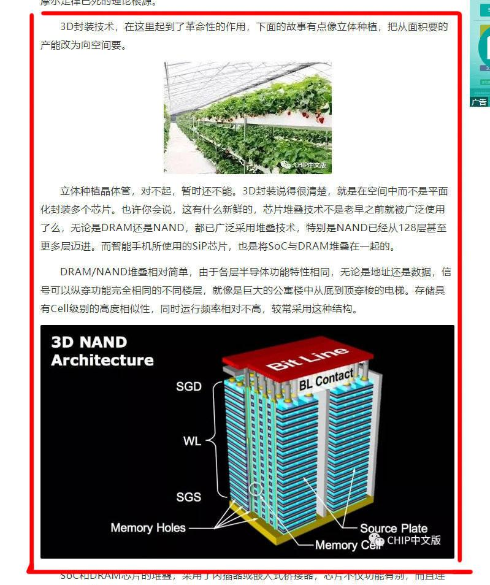
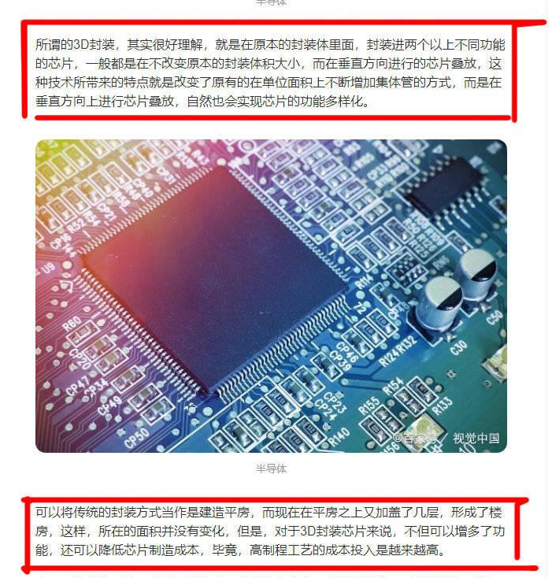

“国产14nm芯片明年量产” 引争议！“浮躁风”要不得
近日，中国电子信息产业发展研究院电子信息研究所所长温晓君在采访中称“国产14纳米芯片有望在明年实现量产”，引发关心芯片产业的行业内外人士爆发激烈讨论。不同观点对立之间，我们也得以窥见社会公众对芯片行业热切关注背后浮现的问题。
几天前，环球网发布一篇名为《温晓君谈14nm芯片量产：曙光就在眼前》的采访文章，里面提及我国国产芯片的最新研究进展，环球网还采访了中国电子信息产业发展研究院电子信息研究所所长温晓君。
文章中温晓君向记者详细介绍了14nm芯片的发展以及现状，并直言：“国产14纳米芯片有望在明年实现量产，国产芯片已经迎来最好的时刻”，目前原报道已经删去这句话，但这句话引起的激烈讨论却还在网络上持续发酵。

原报道（左），更新后的报道（右）
6月24日，微博博主@乌合麒麟 转发@菊厂影业Fans 转发这则新闻的配文。
@菊厂影业Fans 转发新闻时还写了一段话，他爆料称海思生产的芯片叠加“1+1大于2”，能把“两个低制程芯片进行叠加优化”，“14nm芯片经过优化和新技术支撑可以比肩7nm性能”，并称“功耗和热度不错”。
而@乌合麒麟 转发这一条微博时自豪宣称“封锁着封锁着我们就什么都有了”。
于是博主@Blood旌旗 嘲讽道：“可以将14nm芯片进行双芯叠加...将叠加性能提升至比肩7nm芯片的程度，并且功耗发热也很不了错。”......emmm，让我想起了“两杯50度的水，倒在一起成了100度”。

以@Blood旌旗为代表的网友们认为@乌合麒麟“什么都不懂瞎沸腾”，更有网友直接批评称其 “对国产芯片的盲目吹捧会阻碍行业进步”“以一己之力毁了国产芯片发展”。
于是一时间大量数码博主起来质疑，@乌合麒麟不得不重新发布了一个“严谨版本”，同时称“我国产芯片的草稿都起好了，实现量产那天我得好好吹一波”。

面对质疑者提出的“过于乐观”的批评，@乌合麒麟回应强调“中国芯片这些年的进步是该沸腾的，最终实现量产是该大沸腾的”。
但是仍旧有许多数码博主和网友不买账，并且进行了分析。
最后@乌合麒麟不得不发表道歉声明，随即又被微博网友指出不够诚恳、阴阳怪气。不同观点的双方几番争论后，@乌合麒麟撤回两次道歉，直接对线，要“从科学和逻辑的角度论述一下这件事”。
@乌合麒麟 称，查阅资料后他认定，这种芯片叠加技术确实存在，叫“3D封装”，并称“英特尔正是靠着这种3D堆叠技术把14nm芯片的功效和台积电7nm甚至5nm的功效打得有来有回的”。
并且他还贴出了自己查阅的资料：


至此，微博上对于“国产芯片明年是否可能做到量产”的讨论形成了两派不同的观点。
以@乌合麒麟等人为代表的一方认为，虽然目前国产芯片还受到制裁，但是当年空间站中国也是这样发展起来的，越是被制裁就越可能用中国速度惊艳世界。
另一方观点则认为，@乌合麒麟作为行业外人士，本身拥有一定影响力，国产芯片目前外部形势本就很不乐观，过于夸大能动性很可能会让大家以为中国芯片产业发展很容易，反而忽略应该给予芯片产业更多的扶持和专注稳扎稳打的技术进步。
不可否认近年来我国芯片行业已经取得很多成绩，但随着芯片产业风口渐盛，也浮现很多问题。新华社刊文称，芯片行业目前就有两大问题，一是动辄宣扬“两年取代”、“三年比肩”式的口号，二是不少重大芯片类制造项目“烂尾”、“停工”，“浮躁风”正在侵袭这一战略行业。这不仅对行业毫无促进作用，反而容易导致“迷之自信”，丢失了稳扎稳打的初心。
关键核心技术是要不来、买不来、讨不来的，但也锁不来、催不来、夸不来。既然全民关“芯”，芯片产业更要各司其职，真正潜下心来，专注做好创新研发。